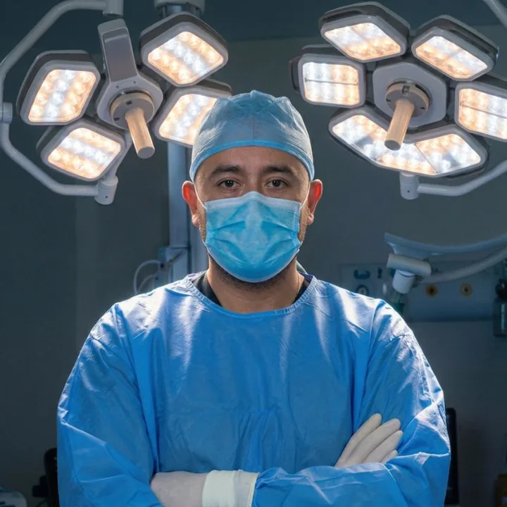

Neurocirujano en Querétaro
especialista en columna vertebral
¿Llevas meses con dolor de espalda o hernia discal? Diagnóstico completo antes de hablar de cirugía. La mínima invasión es mi filosofía — recuperación en días, no en meses.
Dr. Carlos Mendoza
Neurocirujano certificado por el Consejo Mexicano de Cirugía Neurológica, egresado con mención honorífica de la UNAM y formado en el Hospital General de México — una de las sedes más exigentes del país.
Con rotaciones internacionales en Brasil y Estados Unidos, publicaciones científicas indexadas y más de 10 años de experiencia, mi enfoque es claro: diagnosticar antes de operar, y operar solo cuando es la mejor opción para ti.

¿Te suena familiar?
"Llevo meses con dolor que nadie me explica bien"
Hago un diagnóstico completo con imagen antes de cualquier decisión. No suposiciones, no tratamientos genéricos. Entiendo exactamente qué está pasando en tu columna.
"Me dijeron que necesito cirugía y le tengo miedo"
El primer paso siempre es evaluar si la cirugía realmente es necesaria. Con mínima invasión, las incisiones son pequeñas y la recuperación es en días. No semanas.
"Ya probé terapia y medicamentos y sigo igual"
Hay condiciones de columna que solo un neurocirujano especialista puede resolver. Si el tratamiento conservador no funcionó, es momento de un diagnóstico especializado.
Trayectoria del Dr. Carlos Mendoza
en neurocirugía
certificado
Querétaro
Cirugías de columna y cerebro en Querétaro
Con enfoque en columna vertebral y neurocirugía general, tratamos desde hernias hasta tumores cerebrales.
Cirugía de Columna Vertebral
Especialidad principal del Dr. Mendoza. Hernia discal, ciática, estenosis espinal, artrodesis — todos los procedimientos de columna ejecutados por mínima invasión cuando es posible. Menos cicatriz, menos dolor, vuelta a tu vida más rápido.
Cirugía Cerebral
Tumores cerebrales, aneurismas, hematomas subdurales y traumatismo craneoencefálico. Cirugía con neuronavegación de última generación.
Acepta seguro de gastos médicos Inbursa. Ajusta al tabulador correspondiente.
Cómo es tu primera consulta de neurocirugía
Tres pasos claros. Sin tecnicismos innecesarios. Sin prisa.
Entiendo tu caso
La consulta inicia con una conversación a fondo. Reviso tu historial, síntomas y estudios previos. Sin prisas. Tú hablas, yo entiendo.
Diagnóstico preciso
Se solicitan o revisan estudios de imagen (resonancia, tomografía) para saber exactamente qué está pasando en tu columna o tu cabeza. Sin suposiciones.
Plan a tu medida
Primero se exploran opciones conservadoras. La cirugía solo se recomienda cuando es la solución correcta y se explica todo el proceso antes de decidir.
¿Por qué elegir a un neurocirujano certificado por el CMN?
Cinco razones que sus pacientes reconocen.
Mínima invasión como estándar
Incisiones pequeñas, menos dolor, recuperación más rápida. No es una opción especial — es la forma en que el Dr. Mendoza opera siempre que es posible.
Diagnóstico primero, siempre
No operamos sin entender completamente tu condición. Si hay alternativa conservadora, va primero. La cirugía es el último recurso, no el primero.
Certificado y con publicaciones
Certificado por el Consejo Mexicano de Cirugía Neurológica. Investigación publicada en revista indexada sobre cirugía mínimamente invasiva de columna (2024).
Formado en tres países
UNAM (México), Universidad Federal de São Paulo (Brasil), CNS Congress (EUA). La medicina de columna más actualizada, aplicada en Querétaro.
Seguimiento postquirúrgico real
El acompañamiento no termina cuando termina la cirugía. El Dr. Mendoza sigue de cerca la recuperación porque eso también es parte del tratamiento.
Profesor universitario
Neurología · Escuela de Medicina Anáhuac Querétaro · 2022 a la fecha
Hospitales en Querétaro
Hospital H+ Querétaro
Calle Privada Ignacio Zaragoza 16ATorre 1, Consultorio 1201
Col. Centro, 76000, Santiago de Querétaro
Instituto Newrospine
Hacienda Vegil 102, Consultorio 107Jardines de la Hacienda, 76180
Santiago de Querétaro
Reseñas en Google
⭐ Reseñas de Google
Ve las reseñas reales de pacientes en Google Maps
Consultorio en Querétaro
Atiendo en Hospital H+ Querétaro e Instituto Newrospine.
Col. Centro, Querétaro, Qro. 76000
Jardines de la Hacienda, Querétaro
Sábado 9:00 – 14:00 h
Preguntas frecuentes
La cirugía es necesaria cuando el tratamiento conservador —fisioterapia, medicamento, reposo estructurado— no resuelve el problema en un tiempo razonable, o cuando existe daño neurológico progresivo (entumecimiento, pérdida de fuerza, pérdida de control de esfínteres). El Dr. Mendoza evalúa cada caso de forma individual antes de recomendar cualquier procedimiento.
Es una técnica quirúrgica donde se operan hernias, estenosis o inestabilidades de columna a través de incisiones pequeñas (menos de 1 cm), usando endoscopio o microscopio quirúrgico. La recuperación es de 24 a 48 horas en lugar de semanas. El resultado es el mismo, con mucho menos trauma para el cuerpo.
Sí, el Dr. Carlos Mendoza está dado de alta en Inbursa y se ajusta a su tabulador de honorarios. Si tienes otra aseguradora, contáctanos para confirmar si puede ajustarse al tabulador correspondiente.
Con cirugía endoscópica (mínima invasión), la mayoría de los pacientes regresan a actividades básicas en 1 a 2 semanas. En cirugías de fijación (artrodesis), la recuperación completa es de 4 a 6 semanas. El Dr. Mendoza explica los tiempos exactos según cada caso antes de la cirugía.
El Dr. Carlos Mendoza atiende en dos consultorios: Hospital H+ Querétaro, Calle Privada Ignacio Zaragoza 16A, Torre 1, Consultorio 1201, Col. Centro, 76000, Santiago de Querétaro, e Instituto Newrospine, Hacienda Vegil 102, Consultorio 107, Jardines de la Hacienda.
Tu columna merece al especialista correcto
Agenda tu primera consulta hoy. Sin listas de espera eternas.